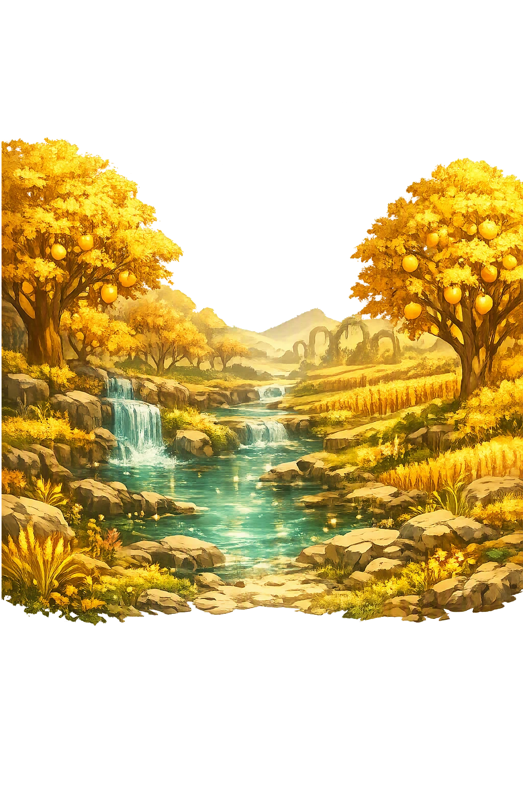
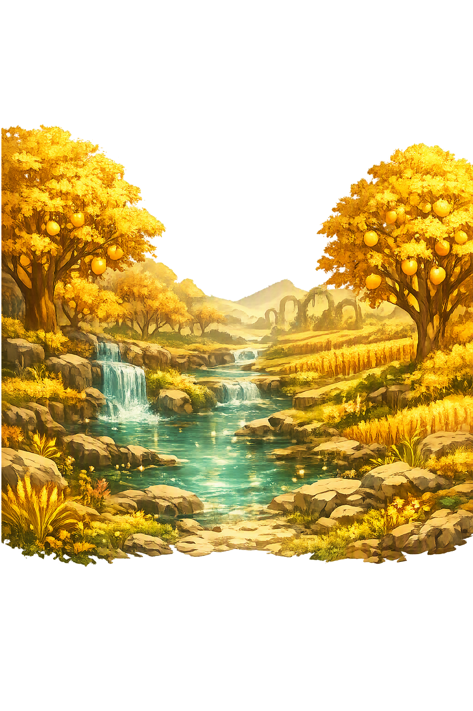

Unicode restoration and ASCII comparison
ᚢᛅᚾᚼᛁᛘᛁᚱ
The name in its original Norse form. Vanaheimr (ᚢᛅᚾᚼᛁᛘᛁᚱ) is attested in the source tradition — “Van-home”. Its original diacritics and script distinctions carry the full phonetic and orthographic weight of the source tradition.
vanaheimr
The plain vanaheimr form is identical to the Unicode restoration. Because this name is already written in Latin letters, no diacritics, stress, or script information were lost — only capitalization differs.
Vanaheimr
The Unicode restoration does not need to recover lost marks for Vanaheimr. Its value is canonical spelling and consistent cataloguing, not the reconstruction of erased orthography. The domain is readable as-is to both DNS and humanity.
Vanaheimr.com → vanaheimr.com
The non-ASCII characters in Vanaheimr are encoded while the ASCII remains visible. To the DNS, it is Punycode. To humanity, it is Vanaheimr.
How Vanaheimr travels from ancient script to the modern URL
Owned, ideal, and ASCII forms of Vanaheimr
Vanaheimr
Restores ᚢᛅᚾᚼᛁᛘᛁᚱ. The full Unicode restoration. vanaheimr.com is not in the PuniCodex collection — it is watched for release; if it drops, this temple upgrades to an owned flagship.
How Vanaheimr was spoken
The Elder Gods' Country Beyond the Æsir's Fence
Vanaheimr — Van-home — is the homeland of the Vanir, the elder kindred of gods whom the Eddas set beside the Æsir: keepers of fertility, wealth, peace, and the magic called seiðr. The record of the realm itself is one stanza and a few sentences of prose: in Vafþrúðnismál the wise powers shape Njörðr in Vanaheimr and hand him to the Æsir as a hostage, with the promise that at the doom of the age he will come home again; Snorri adds that Njörðr was raised there, and Ynglinga saga plants the Vanir's country by the river Tanais. Everything else the tradition knows of Vanaheimr it knows through its exiles — Njörðr, Freyr, and Freyja, who live among the Æsir and remain Vanir still.
The vís regin of Vafþrúðnismál 39 who shaped Njörðr in Vanaheimr — the Vanir named only by their wisdom, never by their faces.
The gísling, the pledged hostage: Njörðr ferried from Vanaheimr to the Æsir to seal the peace after the first war in the world.
The Vanir's province — growth, harvest, and the wealth of fields and flocks — the powers Gullveig's burning could not destroy.
Ynglinga saga's euhemerized geography: the Vanir's country beside the Vanakvísl, the river the medieval world called the Don.
Stories of Vanaheimr
Vanaheimr has no myth of its own: no surviving story is set inside it, no traveller describes it, no poem is located there. Its whole mythology is told from outside, by and about the gods who left it — the hostages and immigrants through whom the Vanir entered the Æsir's world, and the war whose peace made the two kindreds one household.
In the wisdom-contest with the giant Vafþrúðnir, Óðinn asks whence Njörðr came among the sons of the Æsir, he who rules so many temples and sanctuaries though he was not raised among the Æsir. The giant's answer is the realm's one great attestation: in Vanaheimr the wise powers created him and gave him to the gods as a hostage — and at the doom of the age he will come back home among the wise Vanir.
The stanza does everything at once: it names the realm, names its people the wise ones, explains Njörðr's double citizenship, and promises him a homecoming that the surviving corpus never narrates. Vanaheimr is the only divine home defined not by what happens there but by who came from there — and by who is owed a return.
The seeress remembers the world's first war, and it begins inside the Æsir's own hall: Gullveig — the thrice-burned, thrice-born witch whom the Vanir sent or the Æsir harboured — is speared and burned in Hárr's hall, yet lives. Then the gods took counsel on whether the Æsir should pay tribute, and when battle was joined it was the Vanir who broke the wall of Ásgarðr and trod the field in victory — the seeress calls them the war-wise people, vígspá Vǫr.
No poem says who won in the end, and the silence is the point: the war could not be won. What follows in every account is not conquest but exchange — the peace that can only be made by giving hostages. Vanaheimr enters the mythology as the country strong enough to stalemate heaven and wise enough to settle it.
Snorri and the Ynglinga tradition tell the peace from both sides. The Vanir gave their foremost: Njörðr, raised in Vanaheimr, and with him his son Freyr. The Æsir gave Hœnir, tall and comely and thought fit to be a chieftain, and with him Mímir, wisest of men, and Kvasir, wisest of the gods. When Hœnir proved helpless in council without Mímir at his shoulder, the Vanir reckoned themselves cheated — and they cut off Mímir's head and sent it to Óðinn, who preserved it with herbs and spells and consults it to this day for the hidden lore it tells him.
So the exchange that sealed the peace also seeded its bitterness. Njörðr and Freyr thrived among the Æsir and became so naturalized that Lokasenna's Loki must remind Njörðr he was only ever a hostage sent from the east. Mímir's head became Óðinn's oracle. The Vanir kept their country; the Æsir kept the immigrants; and the corpus keeps the asymmetry forever unreconciled.
Snorri's Heimskringla opens its euhemerized geography with the river the medieval world called the Tanais — the Don — flowing between the peoples, and names the country on its eastern side Vanaland or Vanaheimr, and the river itself Vanakvísl. Here the mythic homeland becomes a border province of legendary history, the starting point of the migration that will carry Óðinn's people north to Sweden and set the Yngling kings at Uppsala.
The move is characteristic of the Icelandic historians: every otherworld is also a country, every god also a king. Yet even euhemerized, the pattern holds — Vanaheimr remains the place one leaves to found dynasties elsewhere, the eastern home whose children rule in the west and never quite stop being foreigners.
Every heimr in the Norse cosmos is a homestead, but Vanaheimr is the one defined by leaving it. Ásgarðr has its walls and halls, Miðgarðr its fence, Jötunheimr its giants; Vanaheimr has a departure and a promise. The wise powers shape Njörðr and hand him over, and the corpus never once takes us back across the border — we know the realm only as the place the hostage came from, the address on a homecoming that Ragnarǫk will finally honour. There is something exact in that economy: a peace that could only be made by each side surrendering what it could least spare, and a god who spends his whole mythic life as a guest in someone else's heaven, ruling temples among the Æsir while remaining, at the level of grammar and fate, a Vanir abroad. Vanaheimr is the mythology's quietest lesson in what homes are for: not to be described, but to be owed a return.
Enter Extended Lore